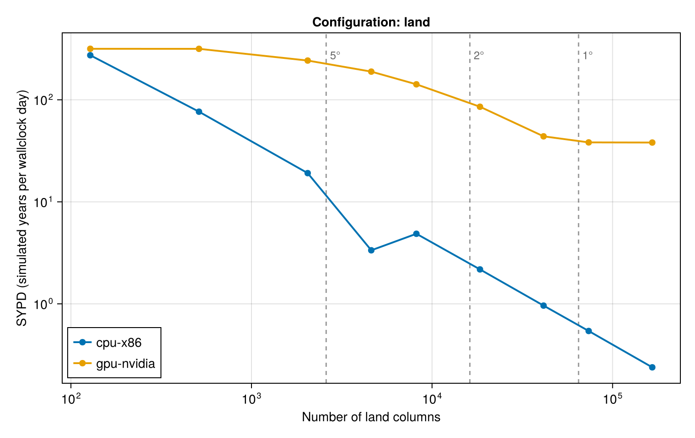
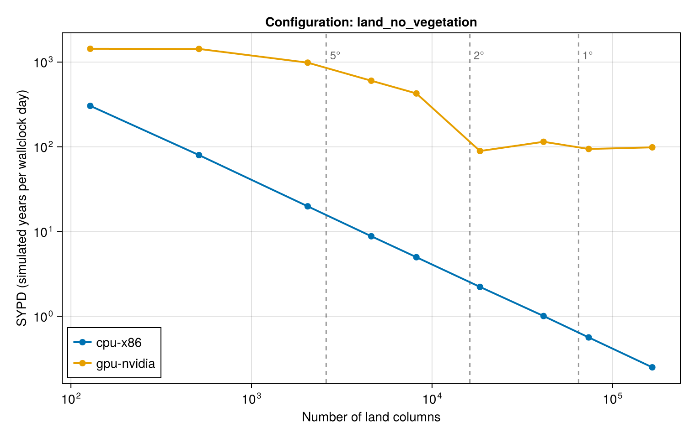
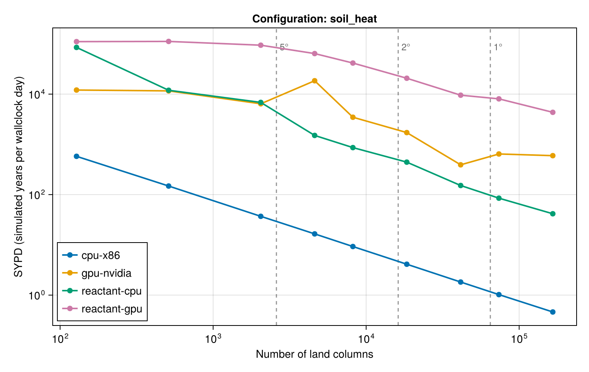

Performance of Terrarium.jl across architectures and resolutions. This page is generated at documentation-build time from benchmark/assets/benchmark_results.json, which is updated by benchmark/manual_benchmarking.jl. Running the benchmark on another architecture adds a series to each figure, a column to the overview table, and a section to the bottom of this page.
Every configuration runs for a fixed number of time steps without output. Initialization and - under Reactant - XLA compilation happen before the clock starts and are reported separately; the timed section covers only the stepping loop. A run is timed once and takes a few seconds, so treat the numbers as indicative: ±20% between repetitions is normal.
The benchmark grids are full Gaussian grids in which every point is an active land column (i.e. a. rock planet configuration), so a real land–sea mask at the same resolution has roughly a third as many columns. The model configurations themselves are defined in benchmark/model_configurations.jl.



Simulated years per wallclock day for each configuration and resolution. — means the architecture has not been benchmarked yet, skipped that resolution, or could not run that configuration; the per-architecture sections below say which.
| Configuration | Columns | cpu-x86 | gpu-nvidia | reactant-cpu | reactant-gpu |
|---|
land | 128 | 273 | 316 | — | — |
land | 512 | 76 | 316 | — | — |
land | 2048 | 19 | 242 | — | — |
land | 4608 | 3.35 | 189 | — | — |
land | 8192 | 4.86 | 142 | — | — |
land | 18432 | 2.18 | 85 | — | — |
land | 41472 | 0.96 | 44 | — | — |
land | 73728 | 0.54 | 38 | — | — |
land | 165888 | 0.24 | 38 | — | — |
land_no_vegetation | 128 | 304 | 1435 | — | — |
land_no_vegetation | 512 | 80 | 1429 | — | — |
land_no_vegetation | 2048 | 20 | 984 | — | — |
land_no_vegetation | 4608 | 8.81 | 602 | — | — |
land_no_vegetation | 8192 | 4.99 | 426 | — | — |
land_no_vegetation | 18432 | 2.23 | 89 | — | — |
land_no_vegetation | 41472 | 1.01 | 115 | — | — |
land_no_vegetation | 73728 | 0.56 | 94 | — | — |
land_no_vegetation | 165888 | 0.25 | 99 | — | — |
soil_heat | 128 | 578 | 12048 | 84969 | 110785 |
soil_heat | 512 | 148 | 11593 | 11925 | 111800 |
soil_heat | 2048 | 37 | 6419 | 6839 | 94046 |
soil_heat | 4608 | 17 | 18447 | 1506 | 64078 |
soil_heat | 8192 | 9.26 | 3467 | 862 | 41518 |
soil_heat | 18432 | 4.12 | 1715 | 443 | 20687 |
soil_heat | 41472 | 1.82 | 392 | 152 | 9516 |
soil_heat | 73728 | 1.02 | 644 | 85 | 8047 |
soil_heat | 165888 | 0.46 | 596 | 42 | 4342 |
Created for Terrarium.jl v0.1.4 on Sun, 09 Aug 2026 20:35:28 in default mode (1x time steps, 1 thread(s)).
julia> versioninfo()
Julia Version 1.12.2
Commit ca9b6662be4 (2025-11-20 16:25 UTC)
Build Info:
Official https://julialang.org release
Platform Info:
OS: Linux (x86_64-linux-gnu)
CPU: 128 × AMD EPYC 9554 64-Core Processor
WORD_SIZE: 64
LLVM: libLLVM-18.1.7 (ORCJIT, znver4)
GC: Built with stock GC
Threads: 1 default, 1 interactive, 1 GC (on 128 virtual cores)
Environment:
LD_LIBRARY_PATH = /usr/local/lib:/usr/local/lib:
| Configuration | Res | Columns | Δt | Steps | SYPD | ms/step | Mcell-steps/s | Memory |
|---|
| land | 3.75° | 4608 | 600 | 217 | 3.49 | 471 | 0.293 | 6.86 MiB |
| landnovegetation | 3.75° | 4608 | 600 | 217 | 9.37 | 175 | 0.789 | 5.76 MiB |
| soil_heat | 3.75° | 4608 | 600 | 217 | 17 | 96.1 | 1.44 | 3.85 MiB |
| Configuration | Res | Columns | Δt | Steps | SYPD | ms/step | Mcell-steps/s | Memory |
|---|
| land | 22.50° | 128 | 600 | 2000 | 273 | 6.01 | 0.639 | 204.14 KiB |
| land | 11.25° | 512 | 600 | 1953 | 76 | 21.5 | 0.715 | 789.14 KiB |
| land | 5.62° | 2048 | 600 | 488 | 19 | 85.9 | 0.715 | 3.06 MiB |
| land | 3.75° | 4608 | 600 | 217 | 3.35 | 490 | 0.282 | 6.86 MiB |
| land | 2.81° | 8192 | 600 | 122 | 4.86 | 338 | 0.728 | 12.20 MiB |
| land | 1.88° | 18432 | 600 | 54 | 2.18 | 755 | 0.733 | 27.43 MiB |
| land | 1.25° | 41472 | 600 | 24 | 0.96 | 1710 | 0.728 | 61.71 MiB |
| land | 0.94° | 73728 | 600 | 20 | 0.54 | 3030 | 0.73 | 109.70 MiB |
| land | 0.62° | 165888 | 600 | 20 | 0.24 | 6880 | 0.724 | 246.81 MiB |
| Configuration | Res | Columns | Δt | Steps | SYPD | ms/step | Mcell-steps/s | Memory |
|---|
| landnovegetation | 22.50° | 128 | 600 | 2000 | 304 | 5.4 | 0.711 | 171.16 KiB |
| landnovegetation | 11.25° | 512 | 600 | 1953 | 80 | 20.6 | 0.747 | 661.66 KiB |
| landnovegetation | 5.62° | 2048 | 600 | 488 | 20 | 82.7 | 0.743 | 2.56 MiB |
| landnovegetation | 3.75° | 4608 | 600 | 217 | 8.81 | 186 | 0.742 | 5.76 MiB |
| landnovegetation | 2.81° | 8192 | 600 | 122 | 4.99 | 329 | 0.746 | 10.23 MiB |
| landnovegetation | 1.88° | 18432 | 600 | 54 | 2.23 | 738 | 0.749 | 23.00 MiB |
| landnovegetation | 1.25° | 41472 | 600 | 24 | 1.01 | 1630 | 0.764 | 51.74 MiB |
| landnovegetation | 0.94° | 73728 | 600 | 20 | 0.56 | 2910 | 0.76 | 91.98 MiB |
| landnovegetation | 0.62° | 165888 | 600 | 20 | 0.25 | 6560 | 0.758 | 206.94 MiB |
| Configuration | Res | Columns | Δt | Steps | SYPD | ms/step | Mcell-steps/s | Memory |
|---|
| soil_heat | 22.50° | 128 | 600 | 2000 | 578 | 2.84 | 1.35 | 114.63 KiB |
| soil_heat | 11.25° | 512 | 600 | 1953 | 148 | 11.1 | 1.39 | 443.13 KiB |
| soil_heat | 5.62° | 2048 | 600 | 488 | 37 | 44.4 | 1.38 | 1.72 MiB |
| soil_heat | 3.75° | 4608 | 600 | 217 | 17 | 99.4 | 1.39 | 3.85 MiB |
| soil_heat | 2.81° | 8192 | 600 | 122 | 9.26 | 177 | 1.39 | 6.85 MiB |
| soil_heat | 1.88° | 18432 | 600 | 54 | 4.12 | 399 | 1.39 | 15.40 MiB |
| soil_heat | 1.25° | 41472 | 600 | 24 | 1.82 | 903 | 1.38 | 34.65 MiB |
| soil_heat | 0.94° | 73728 | 600 | 20 | 1.02 | 1610 | 1.38 | 61.60 MiB |
| soil_heat | 0.62° | 165888 | 600 | 20 | 0.46 | 3560 | 1.4 | 138.59 MiB |
| Configuration | Res | Columns | L | Δt | Steps | SYPD | ms/step | Mcell-steps/s | Memory |
|---|
| land | 3.75° | 4608 | 10 | 600 | 651 | 22 | 74.8 | 0.616 | 3.70 MiB |
| land | 3.75° | 4608 | 20 | 600 | 326 | 12 | 138 | 0.67 | 5.28 MiB |
| land | 3.75° | 4608 | 30 | 600 | 217 | 8.2 | 200 | 0.69 | 6.86 MiB |
| land | 3.75° | 4608 | 60 | 600 | 109 | 4.23 | 388 | 0.713 | 11.62 MiB |
| land | 3.75° | 4608 | 100 | 600 | 65 | 2.63 | 626 | 0.737 | 17.95 MiB |
| Configuration | NF | Res | Columns | Δt | Steps | SYPD | ms/step | Mcell-steps/s | Memory |
|---|
| land | Float32 | 3.75° | 4608 | 600 | 217 | 3.13 | 524 | 0.264 | 6.86 MiB |
| land | Float64 | 3.75° | 4608 | 600 | 217 | 6.7 | 245 | 0.564 | 13.73 MiB |
| Configuration | Variant | Res | Columns | Δt | Steps | SYPD | ms/step | Mcell-steps/s | Memory |
|---|
| land | ForwardEuler | 3.75° | 4608 | 600 | 217 | 8.04 | 204 | 0.676 | 6.86 MiB |
| land | Heun | 3.75° | 4608 | 600 | 217 | 4.14 | 396 | 0.349 | 6.86 MiB |
Created for Terrarium.jl v0.1.4 on Sun, 09 Aug 2026 20:02:07 in default mode (1x time steps, 1 thread(s)).
julia> versioninfo()
Julia Version 1.12.2
Commit ca9b6662be4 (2025-11-20 16:25 UTC)
Build Info:
Official https://julialang.org release
Platform Info:
OS: Linux (x86_64-linux-gnu)
CPU: 128 × AMD EPYC 9554 64-Core Processor
WORD_SIZE: 64
LLVM: libLLVM-18.1.7 (ORCJIT, znver4)
GC: Built with stock GC
Threads: 1 default, 1 interactive, 1 GC (on 128 virtual cores)
Environment:
LD_LIBRARY_PATH = /usr/local/lib:/usr/local/lib:
julia> CUDA.versioninfo()
CUDA toolchain:
- runtime 13.3.0, artifact installation
- driver 580.126.9 for 13.3
- compiler 13.3.33, artifact installation
CUDA libraries:
- cuBLAS: 13.6.0
- cuSPARSE: 12.8.2
- cuSOLVER: 12.2.6
- cuFFT: 12.3.0
- cuRAND: 10.4.3
- CUPTI: 2026.2.1 (API 13.3.1)
- NVML: 13.0.0+580.126.9
Julia packages:
- CUDACore: 6.2.1
- GPUArrays: 11.5.9
- GPUCompiler: 1.23.0
- KernelAbstractions: 0.9.42
- CUDA_Driver_jll: 13.3.0+1
- CUDA_Compiler_jll: 0.4.4+1
- CUDA_Runtime_jll: 0.23.0+1
- NVPTX_LLVM_Backend_jll: 22.1.7+1
Toolchain:
- Julia: 1.12.2
- LLVM: 18.1.7
1 device:
0: NVIDIA H100 80GB HBM3 (sm_90, 77.995 GiB / 79.647 GiB available)
compiles to sm_90a / PTX 9.3 (LLVM: sm_90a / PTX 9.0)
| Configuration | Res | Columns | Δt | Steps | SYPD | ms/step | Mcell-steps/s | Memory |
|---|
| land | 3.75° | 4608 | 600 | 217 | 156 | 10.5 | 13.1 | 6.86 MiB |
| landnovegetation | 3.75° | 4608 | 600 | 217 | 676 | 2.43 | 56.9 | 5.76 MiB |
| soil_heat | 3.75° | 4608 | 600 | 217 | 3683 | 0.446 | 310 | 3.85 MiB |
| Configuration | Res | Columns | Δt | Steps | SYPD | ms/step | Mcell-steps/s | Memory |
|---|
| land | 22.50° | 128 | 600 | 2000 | 316 | 5.19 | 0.739 | 204.14 KiB |
| land | 11.25° | 512 | 600 | 1953 | 316 | 5.2 | 2.95 | 789.14 KiB |
| land | 5.62° | 2048 | 600 | 488 | 242 | 6.78 | 9.07 | 3.06 MiB |
| land | 3.75° | 4608 | 600 | 217 | 189 | 8.7 | 15.9 | 6.86 MiB |
| land | 2.81° | 8192 | 600 | 122 | 142 | 11.6 | 21.2 | 12.20 MiB |
| land | 1.88° | 18432 | 600 | 54 | 85 | 19.2 | 28.8 | 27.43 MiB |
| land | 1.25° | 41472 | 600 | 24 | 44 | 37.5 | 33.2 | 61.71 MiB |
| land | 0.94° | 73728 | 600 | 20 | 38 | 43 | 51.5 | 109.70 MiB |
| land | 0.62° | 165888 | 600 | 20 | 38 | 43.1 | 115 | 246.81 MiB |
| Configuration | Res | Columns | Δt | Steps | SYPD | ms/step | Mcell-steps/s | Memory |
|---|
| landnovegetation | 22.50° | 128 | 600 | 2000 | 1435 | 1.14 | 3.35 | 171.16 KiB |
| landnovegetation | 11.25° | 512 | 600 | 1953 | 1429 | 1.15 | 13.4 | 661.66 KiB |
| landnovegetation | 5.62° | 2048 | 600 | 488 | 984 | 1.67 | 36.8 | 2.56 MiB |
| landnovegetation | 3.75° | 4608 | 600 | 217 | 602 | 2.73 | 50.7 | 5.76 MiB |
| landnovegetation | 2.81° | 8192 | 600 | 122 | 426 | 3.85 | 63.8 | 10.23 MiB |
| landnovegetation | 1.88° | 18432 | 600 | 54 | 89 | 18.4 | 30 | 23.00 MiB |
| landnovegetation | 1.25° | 41472 | 600 | 24 | 115 | 14.3 | 86.9 | 51.74 MiB |
| landnovegetation | 0.94° | 73728 | 600 | 20 | 94 | 17.4 | 127 | 91.98 MiB |
| landnovegetation | 0.62° | 165888 | 600 | 20 | 99 | 16.7 | 299 | 206.94 MiB |
| Configuration | Res | Columns | Δt | Steps | SYPD | ms/step | Mcell-steps/s | Memory |
|---|
| soil_heat | 22.50° | 128 | 600 | 2000 | 12048 | 0.136 | 28.2 | 114.63 KiB |
| soil_heat | 11.25° | 512 | 600 | 1953 | 11593 | 0.142 | 108 | 443.13 KiB |
| soil_heat | 5.62° | 2048 | 600 | 488 | 6419 | 0.256 | 240 | 1.72 MiB |
| soil_heat | 3.75° | 4608 | 600 | 217 | 18447 | 0.0891 | 1550 | 3.85 MiB |
| soil_heat | 2.81° | 8192 | 600 | 122 | 3467 | 0.474 | 519 | 6.85 MiB |
| soil_heat | 1.88° | 18432 | 600 | 54 | 1715 | 0.958 | 577 | 15.40 MiB |
| soil_heat | 1.25° | 41472 | 600 | 24 | 392 | 4.19 | 297 | 34.65 MiB |
| soil_heat | 0.94° | 73728 | 600 | 20 | 644 | 2.55 | 867 | 61.60 MiB |
| soil_heat | 0.62° | 165888 | 600 | 20 | 596 | 2.76 | 1810 | 138.59 MiB |
| Configuration | Res | Columns | L | Δt | Steps | SYPD | ms/step | Mcell-steps/s | Memory |
|---|
| land | 3.75° | 4608 | 10 | 600 | 651 | 268 | 6.13 | 7.52 | 3.70 MiB |
| land | 3.75° | 4608 | 20 | 600 | 326 | 222 | 7.41 | 12.4 | 5.28 MiB |
| land | 3.75° | 4608 | 30 | 600 | 217 | 190 | 8.64 | 16 | 6.86 MiB |
| land | 3.75° | 4608 | 60 | 600 | 109 | 79 | 20.8 | 13.3 | 11.62 MiB |
| land | 3.75° | 4608 | 100 | 600 | 65 | 96 | 17.2 | 26.8 | 17.95 MiB |
| Configuration | NF | Res | Columns | Δt | Steps | SYPD | ms/step | Mcell-steps/s | Memory |
|---|
| land | Float32 | 3.75° | 4608 | 600 | 217 | 169 | 9.7 | 14.2 | 6.86 MiB |
| land | Float64 | 3.75° | 4608 | 600 | 217 | 169 | 9.7 | 14.3 | 13.73 MiB |
| Configuration | Variant | Res | Columns | Δt | Steps | SYPD | ms/step | Mcell-steps/s | Memory |
|---|
| land | ForwardEuler | 3.75° | 4608 | 600 | 217 | 302 | 5.43 | 25.4 | 6.86 MiB |
| land | Heun | 3.75° | 4608 | 600 | 217 | 97 | 17 | 8.12 | 6.86 MiB |
Created for Terrarium.jl v0.1.4 on Sun, 09 Aug 2026 20:12:54 in default mode (1x time steps, 1 thread(s)).
julia> versioninfo()
Julia Version 1.12.2
Commit ca9b6662be4 (2025-11-20 16:25 UTC)
Build Info:
Official https://julialang.org release
Platform Info:
OS: Linux (x86_64-linux-gnu)
CPU: 128 × AMD EPYC 9554 64-Core Processor
WORD_SIZE: 64
LLVM: libLLVM-18.1.7 (ORCJIT, znver4)
GC: Built with stock GC
Threads: 1 default, 1 interactive, 1 GC (on 128 virtual cores)
Environment:
LD_LIBRARY_PATH = /usr/local/lib:/usr/local/lib:
Reactant backend: cpu (selected with Reactant.set_default_backend("cpu")).
| Configuration | Res | Columns | Δt | Steps | SYPD | ms/step | Mcell-steps/s | Memory | Compile | Status |
|---|
| land | 3.75° | 4608 | — | — | — | — | — | — | — | failed: MethodError |
| landnovegetation | 3.75° | 4608 | — | — | — | — | — | — | — | failed: ErrorException |
| soil_heat | 3.75° | 4608 | 600 | 217 | 1484 | 1.11 | 125 | 3.85 MiB | 31.6 s | ok |
| Configuration | Res | Columns | Δt | Steps | SYPD | ms/step | Mcell-steps/s | Memory | Status |
|---|
| land | 22.50° | 128 | — | — | — | — | — | — | failed: MethodError |
| land | 11.25° | 512 | — | — | — | — | — | — | failed: MethodError |
| land | 5.62° | 2048 | — | — | — | — | — | — | failed: MethodError |
| land | 3.75° | 4608 | — | — | — | — | — | — | failed: MethodError |
| land | 2.81° | 8192 | — | — | — | — | — | — | failed: ErrorException |
| land | 1.88° | 18432 | — | — | — | — | — | — | failed: ErrorException |
| land | 1.25° | 41472 | — | — | — | — | — | — | failed: ErrorException |
| land | 0.94° | 73728 | — | — | — | — | — | — | failed: ErrorException |
| land | 0.62° | 165888 | — | — | — | — | — | — | failed: ErrorException |
| Configuration | Res | Columns | Δt | Steps | SYPD | ms/step | Mcell-steps/s | Memory | Status |
|---|
| landnovegetation | 22.50° | 128 | — | — | — | — | — | — | failed: ErrorException |
| landnovegetation | 11.25° | 512 | — | — | — | — | — | — | failed: ErrorException |
| landnovegetation | 5.62° | 2048 | — | — | — | — | — | — | failed: ErrorException |
| landnovegetation | 3.75° | 4608 | — | — | — | — | — | — | failed: ErrorException |
| landnovegetation | 2.81° | 8192 | — | — | — | — | — | — | failed: ErrorException |
| landnovegetation | 1.88° | 18432 | — | — | — | — | — | — | failed: ErrorException |
| landnovegetation | 1.25° | 41472 | — | — | — | — | — | — | failed: ErrorException |
| landnovegetation | 0.94° | 73728 | — | — | — | — | — | — | failed: ErrorException |
| landnovegetation | 0.62° | 165888 | — | — | — | — | — | — | failed: ErrorException |
| Configuration | Res | Columns | Δt | Steps | SYPD | ms/step | Mcell-steps/s | Memory | Compile |
|---|
| soil_heat | 22.50° | 128 | 600 | 2000 | 84969 | 0.0193 | 199 | 114.63 KiB | 14.6 s |
| soil_heat | 11.25° | 512 | 600 | 1953 | 11925 | 0.138 | 112 | 443.13 KiB | 14.6 s |
| soil_heat | 5.62° | 2048 | 600 | 488 | 6839 | 0.24 | 256 | 1.72 MiB | 14.7 s |
| soil_heat | 3.75° | 4608 | 600 | 217 | 1506 | 1.09 | 127 | 3.85 MiB | 1.1 s |
| soil_heat | 2.81° | 8192 | 600 | 122 | 862 | 1.9 | 129 | 6.85 MiB | 15.0 s |
| soil_heat | 1.88° | 18432 | 600 | 54 | 443 | 3.71 | 149 | 15.40 MiB | 15.7 s |
| soil_heat | 1.25° | 41472 | 600 | 24 | 152 | 10.8 | 115 | 34.65 MiB | 16.7 s |
| soil_heat | 0.94° | 73728 | 600 | 20 | 85 | 19.3 | 114 | 61.60 MiB | 18.4 s |
| soil_heat | 0.62° | 165888 | 600 | 20 | 42 | 39.5 | 126 | 138.59 MiB | 23.2 s |
| Configuration | Res | Columns | L | Δt | Steps | SYPD | ms/step | Mcell-steps/s | Memory | Status |
|---|
| land | 3.75° | 4608 | 10 | — | — | — | — | — | — | failed: MethodError |
| land | 3.75° | 4608 | 20 | — | — | — | — | — | — | failed: MethodError |
| land | 3.75° | 4608 | 30 | — | — | — | — | — | — | failed: MethodError |
| land | 3.75° | 4608 | 60 | — | — | — | — | — | — | failed: MethodError |
| land | 3.75° | 4608 | 100 | — | — | — | — | — | — | failed: MethodError |
| Configuration | NF | Res | Columns | Δt | Steps | SYPD | ms/step | Mcell-steps/s | Memory | Status |
|---|
| land | Float32 | 3.75° | 4608 | — | — | — | — | — | — | failed: MethodError |
| land | Float64 | 3.75° | 4608 | — | — | — | — | — | — | failed: MethodError |
| Configuration | Variant | Res | Columns | Δt | Steps | SYPD | ms/step | Mcell-steps/s | Memory | Status |
|---|
| land | ForwardEuler | 3.75° | 4608 | — | — | — | — | — | — | failed: MethodError |
| land | Heun | 3.75° | 4608 | — | — | — | — | — | — | failed: MethodError |
Created for Terrarium.jl v0.1.4 on Sun, 09 Aug 2026 20:11:03 in default mode (1x time steps, 1 thread(s)).
julia> versioninfo()
Julia Version 1.12.2
Commit ca9b6662be4 (2025-11-20 16:25 UTC)
Build Info:
Official https://julialang.org release
Platform Info:
OS: Linux (x86_64-linux-gnu)
CPU: 128 × AMD EPYC 9554 64-Core Processor
WORD_SIZE: 64
LLVM: libLLVM-18.1.7 (ORCJIT, znver4)
GC: Built with stock GC
Threads: 1 default, 1 interactive, 1 GC (on 128 virtual cores)
Environment:
LD_LIBRARY_PATH = /usr/local/lib:/usr/local/lib:
julia> CUDA.versioninfo()
CUDA toolchain:
- runtime 13.3.0, artifact installation
- driver 580.126.9 for 13.3
- compiler 13.3.33, artifact installation
CUDA libraries:
- cuBLAS: 13.6.0
- cuSPARSE: 12.8.2
- cuSOLVER: 12.2.6
- cuFFT: 12.3.0
- cuRAND: 10.4.3
- CUPTI: 2026.2.1 (API 13.3.1)
- NVML: 13.0.0+580.126.9
Julia packages:
- CUDACore: 6.2.1
- GPUArrays: 11.5.9
- GPUCompiler: 1.23.0
- KernelAbstractions: 0.9.42
- CUDA_Driver_jll: 13.3.0+1
- CUDA_Compiler_jll: 0.4.4+1
- CUDA_Runtime_jll: 0.23.0+1
- NVPTX_LLVM_Backend_jll: 22.1.7+1
Toolchain:
- Julia: 1.12.2
- LLVM: 18.1.7
1 device:
0: NVIDIA H100 80GB HBM3 (sm_90, 19.239 GiB / 79.647 GiB available)
compiles to sm_90a / PTX 9.3 (LLVM: sm_90a / PTX 9.0)
Reactant backend: gpu (selected with Reactant.set_default_backend("gpu")).
| Configuration | Res | Columns | Δt | Steps | SYPD | ms/step | Mcell-steps/s | Memory | Compile | Status |
|---|
| land | 3.75° | 4608 | — | — | — | — | — | — | — | failed: MethodError |
| landnovegetation | 3.75° | 4608 | — | — | — | — | — | — | — | failed: ErrorException |
| soil_heat | 3.75° | 4608 | 600 | 217 | 65941 | 0.0249 | 5550 | 3.85 MiB | 31.5 s | ok |
| Configuration | Res | Columns | Δt | Steps | SYPD | ms/step | Mcell-steps/s | Memory | Status |
|---|
| land | 22.50° | 128 | — | — | — | — | — | — | failed: MethodError |
| land | 11.25° | 512 | — | — | — | — | — | — | failed: MethodError |
| land | 5.62° | 2048 | — | — | — | — | — | — | failed: MethodError |
| land | 3.75° | 4608 | — | — | — | — | — | — | failed: MethodError |
| land | 2.81° | 8192 | — | — | — | — | — | — | failed: ErrorException |
| land | 1.88° | 18432 | — | — | — | — | — | — | failed: ErrorException |
| land | 1.25° | 41472 | — | — | — | — | — | — | failed: ErrorException |
| land | 0.94° | 73728 | — | — | — | — | — | — | failed: ErrorException |
| land | 0.62° | 165888 | — | — | — | — | — | — | failed: ErrorException |
| Configuration | Res | Columns | Δt | Steps | SYPD | ms/step | Mcell-steps/s | Memory | Status |
|---|
| landnovegetation | 22.50° | 128 | — | — | — | — | — | — | failed: ErrorException |
| landnovegetation | 11.25° | 512 | — | — | — | — | — | — | failed: ErrorException |
| landnovegetation | 5.62° | 2048 | — | — | — | — | — | — | failed: ErrorException |
| landnovegetation | 3.75° | 4608 | — | — | — | — | — | — | failed: ErrorException |
| landnovegetation | 2.81° | 8192 | — | — | — | — | — | — | failed: ErrorException |
| landnovegetation | 1.88° | 18432 | — | — | — | — | — | — | failed: ErrorException |
| landnovegetation | 1.25° | 41472 | — | — | — | — | — | — | failed: ErrorException |
| landnovegetation | 0.94° | 73728 | — | — | — | — | — | — | failed: ErrorException |
| landnovegetation | 0.62° | 165888 | — | — | — | — | — | — | failed: ErrorException |
| Configuration | Res | Columns | Δt | Steps | SYPD | ms/step | Mcell-steps/s | Memory | Compile |
|---|
| soil_heat | 22.50° | 128 | 600 | 2000 | 110785 | 0.0148 | 259 | 114.63 KiB | 14.4 s |
| soil_heat | 11.25° | 512 | 600 | 1953 | 111800 | 0.0147 | 1050 | 443.13 KiB | 14.4 s |
| soil_heat | 5.62° | 2048 | 600 | 488 | 94046 | 0.0175 | 3520 | 1.72 MiB | 14.6 s |
| soil_heat | 3.75° | 4608 | 600 | 217 | 64078 | 0.0256 | 5390 | 3.85 MiB | 1.1 s |
| soil_heat | 2.81° | 8192 | 600 | 122 | 41518 | 0.0396 | 6210 | 6.85 MiB | 14.9 s |
| soil_heat | 1.88° | 18432 | 600 | 54 | 20687 | 0.0794 | 6960 | 15.40 MiB | 15.5 s |
| soil_heat | 1.25° | 41472 | 600 | 24 | 9516 | 0.173 | 7210 | 34.65 MiB | 16.6 s |
| soil_heat | 0.94° | 73728 | 600 | 20 | 8047 | 0.204 | 10800 | 61.60 MiB | 18.4 s |
| soil_heat | 0.62° | 165888 | 600 | 20 | 4342 | 0.378 | 13200 | 138.59 MiB | 23.1 s |
| Configuration | Res | Columns | L | Δt | Steps | SYPD | ms/step | Mcell-steps/s | Memory | Status |
|---|
| land | 3.75° | 4608 | 10 | — | — | — | — | — | — | failed: MethodError |
| land | 3.75° | 4608 | 20 | — | — | — | — | — | — | failed: MethodError |
| land | 3.75° | 4608 | 30 | — | — | — | — | — | — | failed: MethodError |
| land | 3.75° | 4608 | 60 | — | — | — | — | — | — | failed: MethodError |
| land | 3.75° | 4608 | 100 | — | — | — | — | — | — | failed: MethodError |
| Configuration | NF | Res | Columns | Δt | Steps | SYPD | ms/step | Mcell-steps/s | Memory | Status |
|---|
| land | Float32 | 3.75° | 4608 | — | — | — | — | — | — | failed: MethodError |
| land | Float64 | 3.75° | 4608 | — | — | — | — | — | — | failed: MethodError |
| Configuration | Variant | Res | Columns | Δt | Steps | SYPD | ms/step | Mcell-steps/s | Memory | Status |
|---|
| land | ForwardEuler | 3.75° | 4608 | — | — | — | — | — | — | failed: MethodError |
| land | Heun | 3.75° | 4608 | — | — | — | — | — | — | failed: MethodError |